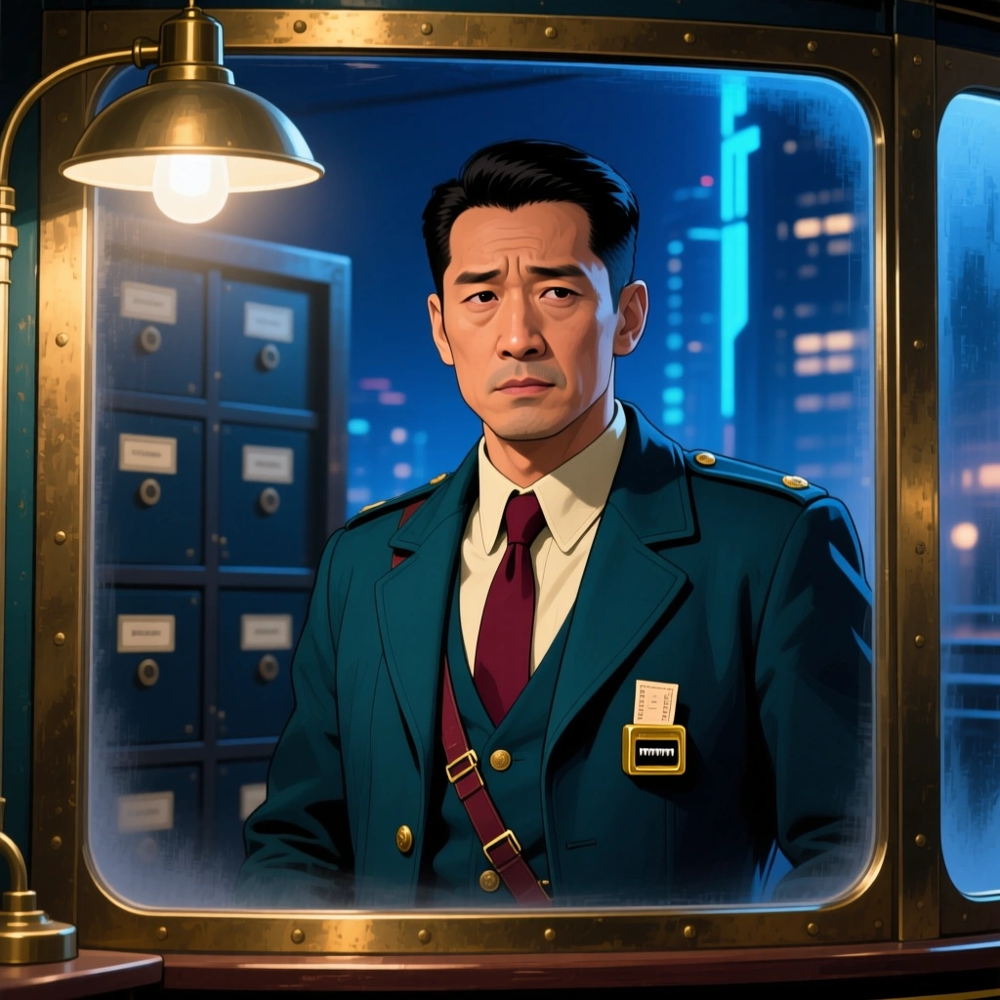
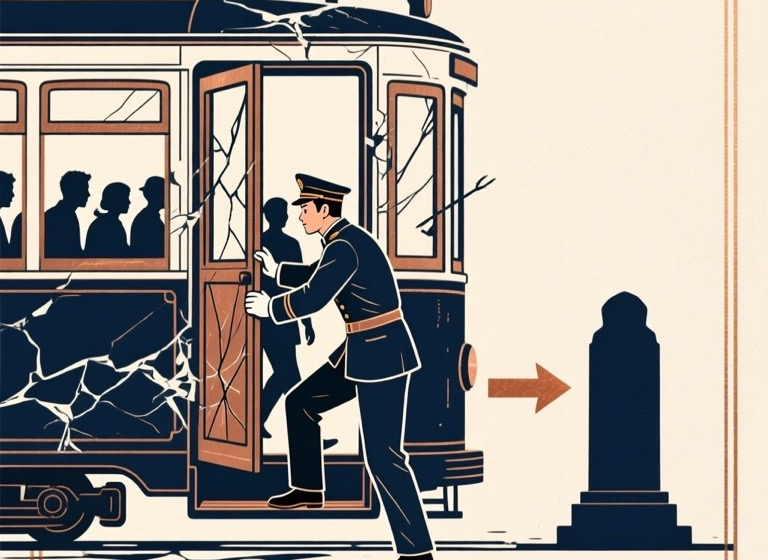

International Editorial
像一本高质量叙事杂志：暖白底、克制黑线、橘红编辑标记。人物仍然占据绝对主体，文字使用有气质但不古旧的编辑排版。

What happens next

He will open the crushed tram door. The city survives with one more memorial—and one fewer living witness.
“A difficult human decision, presented with the calm authority of a great magazine.”
Iowan Old Style / Avenir Next. Serif only for names, quotes and narrative emphasis.
Warm ivory, near-black, muted stone and one controlled editorial orange.
Full portrait behaves like a feature photograph; information sits outside it with generous breathing room.
Emotional, literary positioning and an international audience that values taste over spectacle.
Risk: if the serif is overused, it can feel like a reading app. The production version must keep the decision controls brisk and contemporary.